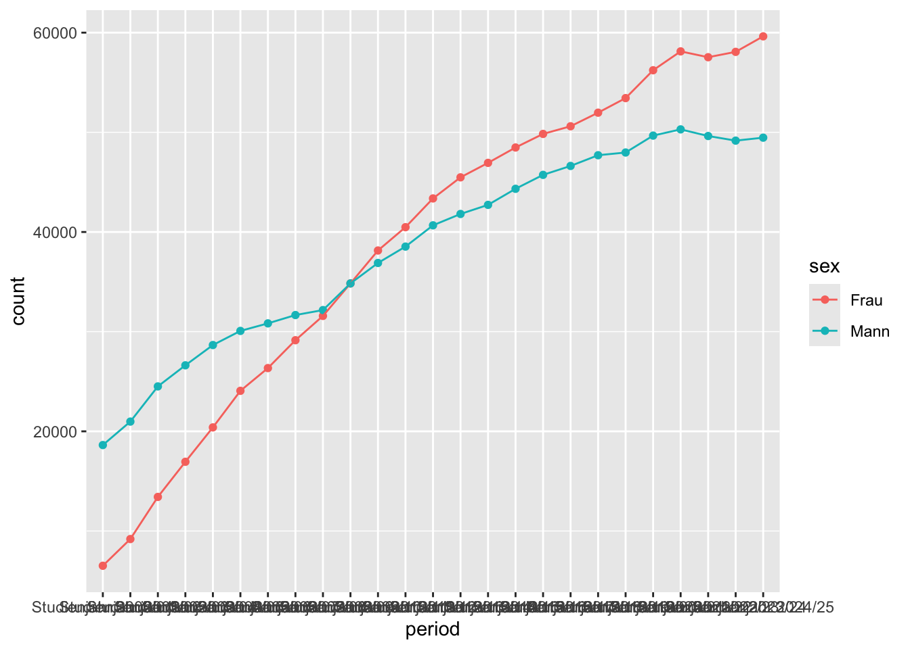
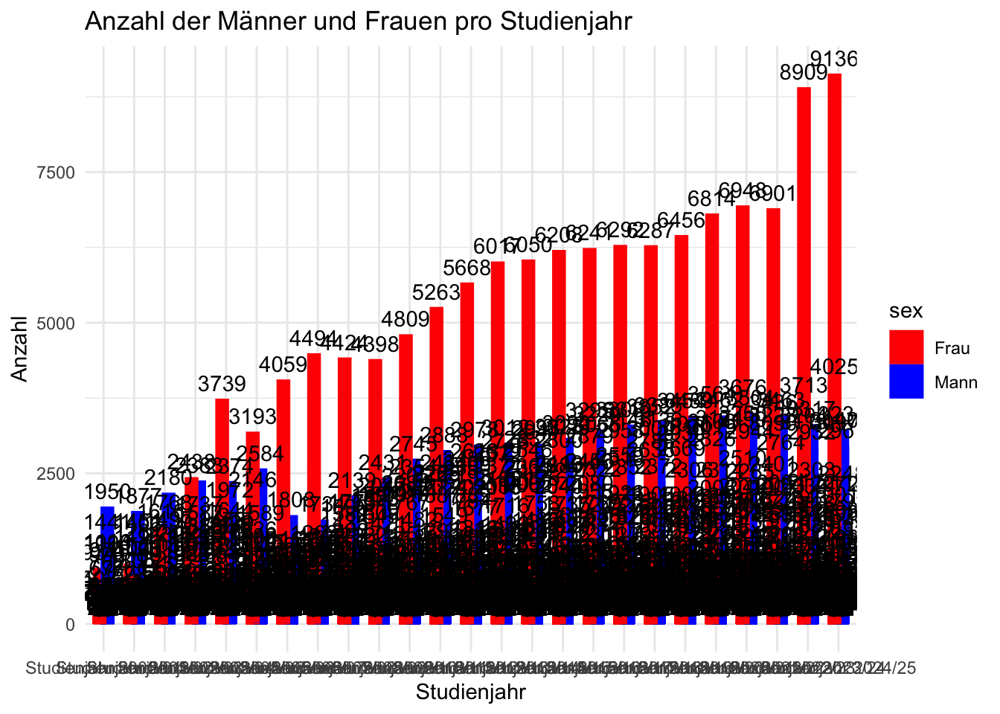
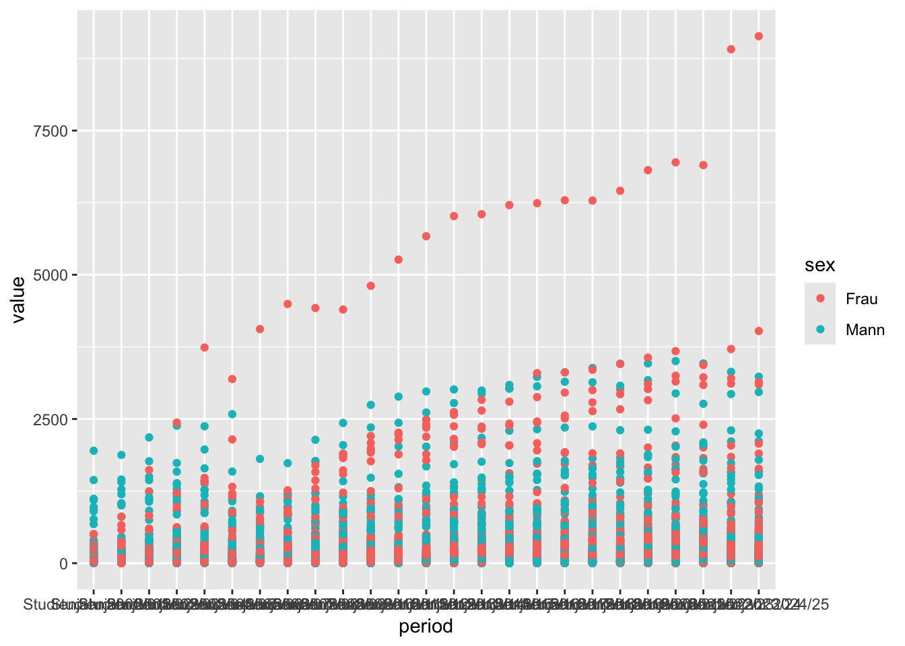
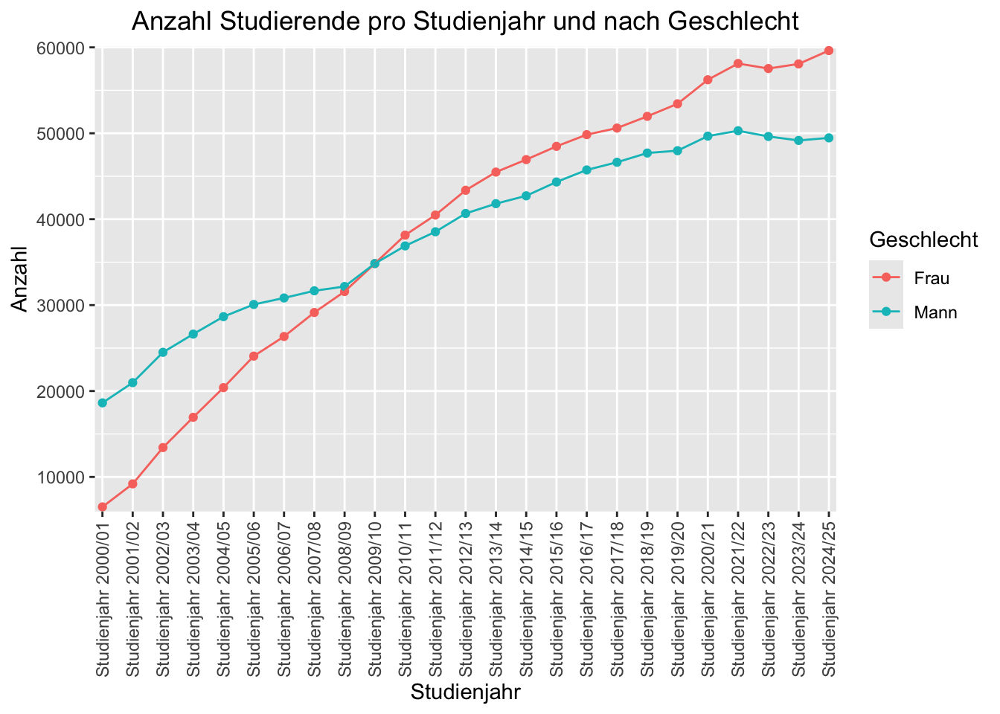
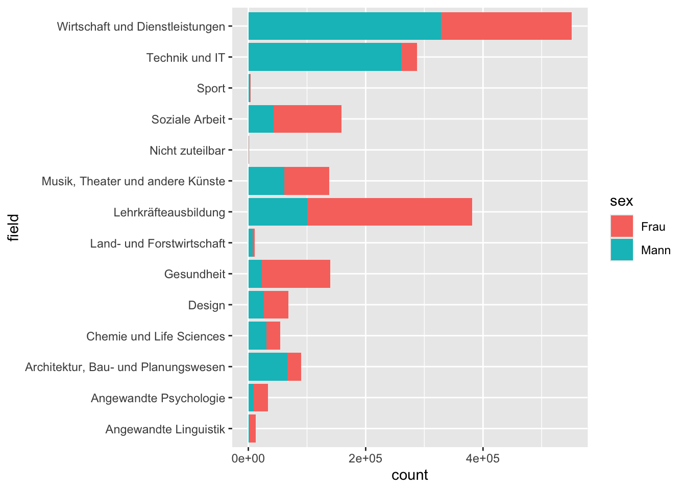
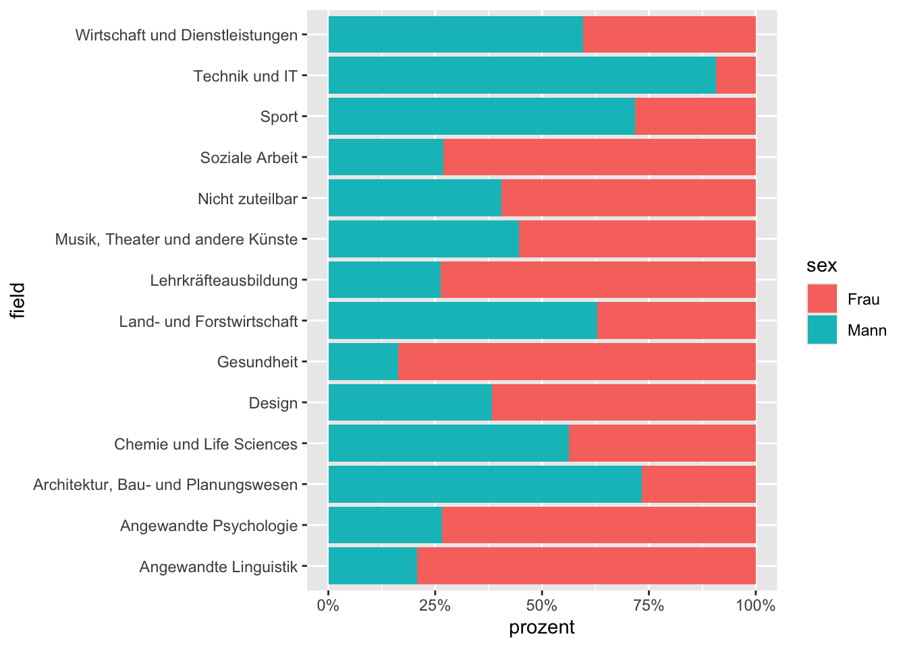
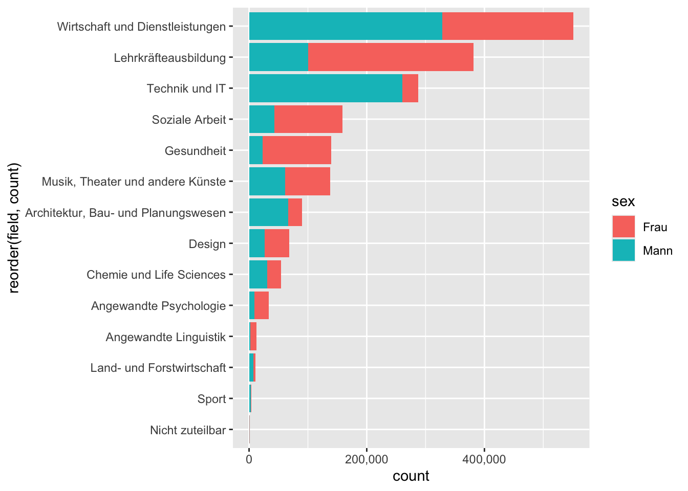

Rows: 7823 Columns: 6
── Column specification ────────────────────────────────────────────────────────
Delimiter: ","
chr (1): PERIOD
dbl (5): UNI, FIELD, LEVEL, SEX, VALUE
ℹ Use `spec()` to retrieve the full column specification for this data.
ℹ Specify the column types or set `show_col_types = FALSE` to quiet this message.
# Daten transformierendaten_processed <- daten_in |>left_join(code_sex, by =c("sex"="CODE")) |>select(-sex) |>rename(sex = LABEL_DE) |>left_join(code_uni, by =c("uni"="CODE")) |>select(-uni) |>rename(uni = LABEL_DE) |>left_join(code_field, by =c("field"="CODE")) |>select(-field) |>rename(field = LABEL_DE) |>left_join(code_level, by =c("level"="CODE")) |>select(-level) |>rename(level = LABEL_DE) |>left_join(code_period, by =c("period"="CODE")) |>select(-period) |>rename(period = LABEL_DE)
#1. Versuch, Daten zusammenzustellendaten_processed |>group_by(sex, period) |>summarise(count =sum(value)) |>ggplot(aes(x = period, y = count, color = sex, group = sex)) +geom_point() +geom_line()
`summarise()` has grouped output by 'sex'. You can override using the `.groups`
argument.

#Alternative zu vorangehendem Codedaten_processed |>count(sex, period, wt = value) |>ggplot(aes(x = period, y = n, color = sex, group = sex)) +geom_point() +geom_line()
# Hier werden verschiedene Daten zusammengestellt, um Grafiken zu generieren# Wieviele Frauen und Männer studieren seit 2000/01 in unterschiedlichen Feldern?daten_processed_field_sex <- daten_processed |>group_by(field, sex) |>summarise(count =sum(value)) |>mutate(prozent = count /sum(count))
`summarise()` has grouped output by 'field'. You can override using the
`.groups` argument.
#2. Versuch: Wieviele Frauen und Männer studieren im letzten Jahr in unterschiedlichen Feldern?daten_processed_projahr <- daten_processed |>group_by(period, sex) |>summarise(count =sum(value))
`summarise()` has grouped output by 'period'. You can override using the
`.groups` argument.
## Werte für period Variable## distinct durchsucht die Spalte period und gibt nur die einzigartigen Werte zurückdaten_processed |>distinct(period)
## Wenn du auf 2024/25 filtern möchtest, dann kannst du das folgendermassen machen. Es ist eine character Variable. Deshalb auf den genauen Namen filtern mit "".daten_processed_jahr_202425 <- daten_processed |>filter(period =="Studienjahr 2024/25")
#Mit der folgenden Grafik wird ersichtlich, wieviele studierende Männer und Frauen sich pro Studienjahr in einem Studium befinden und wie sich die Zahlen über die Jahre hinweg entwickelt haben.# Diese Grafik gibt dir nicht die Summe über alle Geschlechter, sondern hat noch die einzelnen Punkte für uni, field und level. Du siehst es nicht, weil die Daten Balken sich überlappen. Es wird etwas deutlicher wenn du ein geom_point() nutzt. Ich habe es dir hinzugefügt. Wenn du die Daten über die Studienjahre (period) und Geschlechter (sex) grafisch darstellen möchtest, dann musst du die Daten erst auf die beiden Variablen zusammenfassen. Das hast du auch bereits gemacht und das Ergebnis ist in deinem Daten-Objekt (daten_processed_projahr)ggplot(data = daten_processed, aes(x = period, y = value, fill = sex)) +geom_bar(stat ="identity", position =position_dodge(width =0.5),color ="black",size =0) +geom_text(aes(label = value), position =position_dodge(width =0.5), vjust =-0.5,color ="black") +labs(title ="Anzahl der Männer und Frauen pro Studienjahr",x ="Studienjahr",y ="Anzahl") +scale_fill_manual(values =c("Mann"="blue", "Frau"="red")) +theme_minimal()
Warning: Using `size` aesthetic for lines was deprecated in ggplot2 3.4.0.
ℹ Please use `linewidth` instead.

# Grafik als geom_point().ggplot(data = daten_processed, aes(x = period, y = value, color = sex)) +geom_point()

# Hier werden deine zusammegefassten Daten (daten_processed_projahr) verwendet. Beachte die Grösse der Zahlen auf der x-Achse. Du siehst die Werte nun aufsummiert über period und sex.ggplot(data = daten_processed_projahr,mapping =aes(x = period, y = count, fill = sex)) +geom_col(position =position_dodge())
# Als geom_pointbar_plot_period_sex <-ggplot(data = daten_processed_projahr,mapping =aes(x = period, y = count, color = sex, group = sex)) +geom_point() +geom_line() +theme(axis.text.x =element_text(angle =90, vjust =0.5, hjust =1),plot.title =element_text(hjust =0.5)) +scale_x_discrete(labels =function(x) sub("Studienjahr ", "", x)) +scale_y_continuous(breaks =seq(0, 60000, by =5000),limits =c(0, 60000)) +labs(title ="Anzahl Studierende pro Studienjahr und nach Geschlecht",x ="Studienjahr",y ="Anzahl",color ="Geschlecht" )
# Auch in dieser Grafik musst du die aufsummierung zunächst selbst machen. Ich empfehle dir grundsätzlich mit geom_col() zu arbeiten für Säulendiagramme. geom_bar() macht eine Transformation für dich. Du gibst die x-Achse vor (field) und geom_bar() zähle dann die Häufigkeiten. Das ist nicht das, was du hier möchtest und deshalb ist auch das Verhältnis ausgeglichen, da du lediglich die Anzahl Datenpunkte zählst. Siehe Code mit count(field), welches anzeigt was du visualisierst.# geom_col erfordert im Gegensatz zu geom_bar, dass die Höhe der Balken explizit angegeben wird (z.B. mit y = wert). geom_bar berechnet automatisch die Höhe der Balken anhand der Häufigkeit (Count).# inkorrektdaten_processed |>count(field, sex)
# A tibble: 28 × 3
field sex n
<chr> <chr> <int>
1 Angewandte Linguistik Frau 64
2 Angewandte Linguistik Mann 63
3 Angewandte Psychologie Frau 138
4 Angewandte Psychologie Mann 138
5 Architektur, Bau- und Planungswesen Frau 418
6 Architektur, Bau- und Planungswesen Mann 436
7 Chemie und Life Sciences Frau 197
8 Chemie und Life Sciences Mann 198
9 Design Frau 357
10 Design Mann 357
# ℹ 18 more rows
# den korrekten Code hast du bereits zuvor geschrieben und das Ergebnis ist im Datenobjekt daten_processed_field_sex. Ich habe zwei weitere Grafiken erstellt. Einmal mit der Variable count, welches die Summe angibt und einmal mit der Variable prozent, welche die relative Verteilung zeigt. Dasd Prozent habe ich noch für dich zum datensatz hinzugefügt.# Mit dieser Grafik sehe ich, wie sich die Geschlechter innerhalb jedes Fachgebiets verhältnismässig verteilen.ggplot(daten_processed, aes(x = field, fill = sex)) +geom_bar(position ="fill") +labs(title ="Relative Verteilung der Geschlechter nach Fach",x ="Fachgebiet", y ="Anteil") +scale_y_continuous(labels = scales::percent) +theme_minimal() +coord_flip()

# Grafik mit Daten-Objekt daten_processed_field_sex als Aufsummierungggplot(data = daten_processed_field_sex,mapping =aes(x = field, y = count, fill = sex)) +geom_col() +coord_flip()

# Grafik mit Prozent für relative Verteilungggplot(data = daten_processed_field_sex,mapping =aes(x = field, y = prozent, fill = sex)) +geom_col() +coord_flip() +scale_y_continuous(labels = scales::percent)

# Alternative aufsummiert und geordnetggplot(data = daten_processed_field_sex,mapping =aes(x =reorder(field, count), y = count, fill = sex)) +geom_col() +coord_flip() +scale_y_continuous(labels = scales::comma)

# Aufsummiert, geordnet und dodgebar_plot_field_sex <-ggplot(data = daten_processed_field_sex,mapping =aes(x =reorder(field, count), y = count, fill = sex)) +geom_col(position =position_dodge(width =0.9)) +geom_text(aes(label = count),position =position_dodge(width =0.9),vjust =0.5,hjust =-0.1,color ="black",size =3) +coord_flip() +scale_y_continuous(labels = scales::comma) +labs(title ="Anzahl Studierende nach Fachbereich und Geschlecht",x ="Fachbereich",y ="Anzahl",fill ="Geschlecht") +theme_minimal() +theme(plot.title =element_text(hjust =0.5))
Einleitung
Das Ziel ist, aus dem Bildungsdatensatz des Bundesamts für Statistik (BFS) “Studierende an den Fachhochschulen und pädagogischen Hochschulen nach Jahr, Hochschule, Fachbereich, Studienstufe und Geschlecht” vom 27.03.2025 Erkenntnisse zu gewinnen und diese grafisch darzustellen. Dies deckt sich mit meiner aktuellen Tätigkeit, wird hier aber mit einem öffentlichen Datensatz des Bundesamts für Statistik generiert.
Daten
Die Daten “Studierende an den Fachhochschulen und pädagogischen Hochschulen nach Jahr, Hochschule, Fachbereich, Studienstufe und Geschlecht” stammen vom Bundesamt für Statistik. Die entsprechende .csv-Datei und die dazugehörende .ods-Datei sind unter folgendem Link öffentlich zugänglich: https://www.bfs.admin.ch/asset/de/ts-x-15.02.04.04_detail.
Analyseziele
Aus dem Datensatz werden folgende Erkenntnisse generiert:
Wie viele Männer und Frauen besuchen Aus- und Weiterbildungsstudiengänge an Schweizer Hochschulen pro Studienjahr?
Wie viele Männer und Frauen besuchen verschiedene Fachbereiche in Aus- und Weiterbildungsstudiengängen?
Daten Aufbereitung
In den Zeilen 14 bis 79 befindet sich die Datenaufbereitung:
Datenpakete installieren
.csv-Datensatz hochladen und bereinigen
Spaltenbeschriftungen aus .ods-Datei in .csv-Datensatz einfügen
Daten transformieren und zusammenstellen (daten_processed)
Scale for x is already present.
Adding another scale for x, which will replace the existing scale.
Scale for y is already present.
Adding another scale for y, which will replace the existing scale.